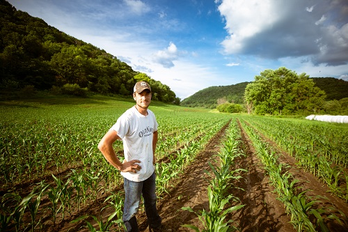

Who: community leaders, teachers, farmers, business professionals, residents, local meteorologists, and anyone that needs up-to-date weather information or education.
Age: 5 to 100
Education: Individuals that use this site will have various levels of education from elementary school-aged children to professionals with degrees in meteorology, education, agriculture, etc.
Motivation: To gain information about local weather forecasts for the current day and time or extended forecasts. Also, receive important severe weather notifications and instructions related to those notifications. Improve knowledge about weather and weather-related information.
Personas
Cassandra McCloud
Ocupation: Meteorologist
Demographics: 32 years old. Chief Meteorologist for WWT-TV/Channel 8
Education: A degree in Environmental Science from UCLA; degree in meteorology from New York State University.
Goals and Motivation for using the site: Learn the most common weather patterns for the three specified regions. Apply information from the site to forecasts and sever weather warnings on televised broadcasts.
Technology: Relies mostly on her laptop and occasionally her iPhone while reporting out in the field due the convenience of a smaller, hand-held device.
Personas (continued)
Fred Farmington

Occupation: Farmer
Demographics and Education: 25 years old. Owner and manager of Holistic Farms. An advanced degree in agriculture.
Goals and Motivation for using the site: Learn regular weather patterns for the area and use this knowledge to plan for future crops. Prepare emergency strategy for severe weather emergencies.
Technology: Primarily uses his iPad for convenience of use and portability.
Scenarios (5)
Are there any weather warnings that I should issue this week?
What current weather news is affecting my location?
Will my crops need extra water this week due to dry, hot, weather?
What will the weather be like 5 days from now?
What is the weather typically like this time of year?